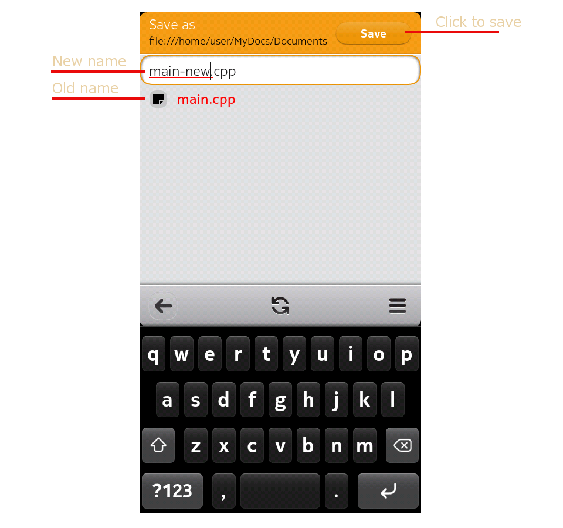

The figure below shows the edit view. The title bar displays the file name and the folder name. The bottom toolbar contains a quick save button and the file menu. The recent files button displays a list of recently opened files. The recent files page shows a list of file names and folder names of the 8 most recently accessed files. Just click the file name to open it. The back button will get you back to the editor page. By clicking the trashcan icon you can clear the list. The recent files list will be saved into $HOME/.texteditor/recentfiles.dat when the application is closed.
The file menu contains entries for opening a new file, opening an existing file and saving a file with a new name. Clicking About will display the application version and Quit will terminate the application. Swiping down will also terminate the application but in that case no warning will be issued for possible unsaved changes. Clicking File>Open will open the file browser for selecting a file to edit. Clicking a folder in the browser will open that folder. The back button in the toolbar will go back to the previous folder. The refresh button will reload the folder contents. The toolbar menu can be used to cancel the browsing and go back to the editor. To save the file with a new name select "Save As" from the File menu. The file browser will open. Select the target folder and write the file name to the text box above the browser window. Then either click enter in the keyboard or click the Save button in the title bar. 